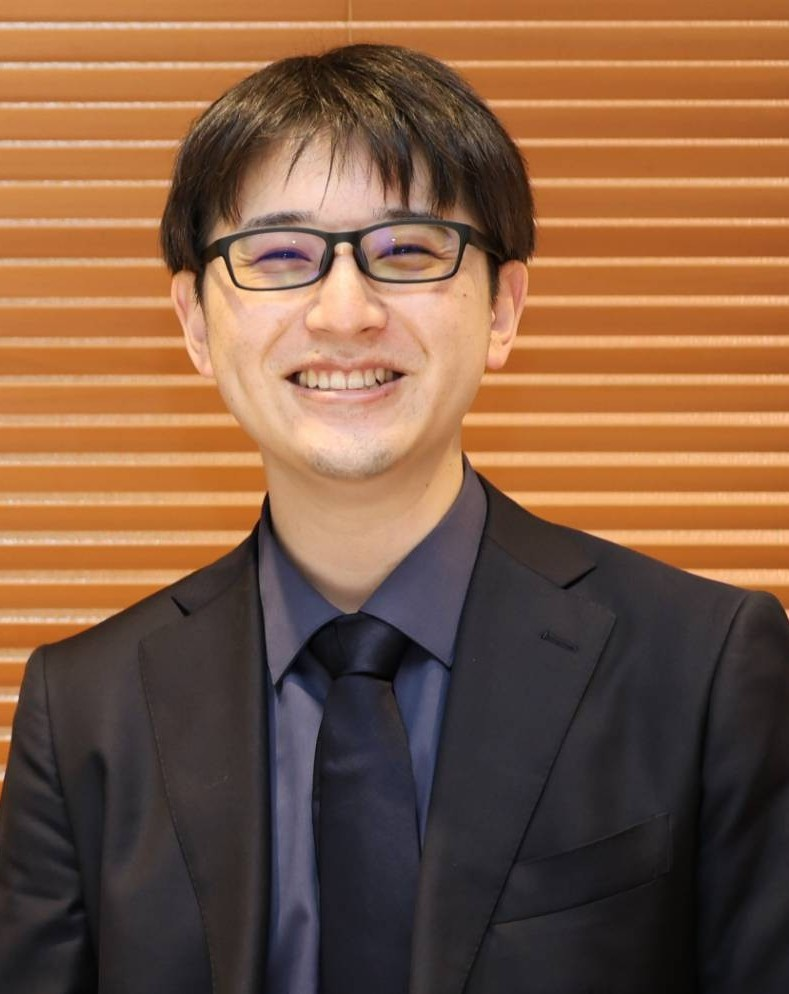

Join the Community
次の一歩を、
次の一歩を、
一人で迷わない。
アライナー矯正をこれから始めたい方も、臨床の判断力を高めたい方も。MAL+で一緒に学びませんか？
ばらばらだった知識が、診断と設計を通して臨床につながっていく。MAL+は、その最初の線を一緒に描く場所です。
特定のシステムに依存せず、デジタル矯正の本質を紐解く。学生・研修医・若手ドクターのための、月例ステップアップコミュニティです。
 01 / LEARN
01 / LEARNMAL+でいま起きていること、次に参加できることを、クリックで隠さず届けます。

月例セミナーのZoomリンクや過去のアーカイブ動画を、ご自身のペースで確認できる専用サイトです。
メンバーポータルへ ↗MAL+とDIOzのコラボによるクリンチェックセミナーを開催しました。
開催情報を見逃さないよう、最新のお知らせをLINEでお届けします。
重要なのはブランド名ではなく、正しいゴールへの道のりを描けること。MAL+は、どのシステムにも応用できる思考の土台を育てます。
バイオメカニクス、診断、治療計画。メーカーが変わっても揺らがない、ドクター自身の思考力をつくります。
インビザラインやシュアスマイルなど、各システムの特徴を理解し、症例に応じて選択できる視点を養います。
初心者が迷わず臨床のスタートラインに立てるよう、基礎から順に学びを積み上げます。
知識を覚えて終わらず、実際の症例に落とし込む。コミュニティで疑問を共有し、臨床判断の精度を高めます。
理論、操作、比較、応用。点だった知識が、月例の学びを通して一本の線になります。
基礎理論、診断、トラブルを未然に防ぐ考え方を体系的に学習。
オフセットやアタッチメント配置など、臨床直結の操作を習得。
シート特性やセットアップの違いを横断的に比較・検証。
3Dプリンターや新しいプレゼンテーション手法を臨床へ。


神保町タワー歯科・矯正歯科勤務。MakeALine+講師／DIOz補佐。各社システムを実際に設計・装着検証した経験をもとに、特定メーカーに偏らない客観的な学びを届けます。
基礎から始めるMAL+の先には、アライナー矯正を総合的に深めるMALと、医院のデジタル実装をチームで進めるDIOzがあります。
理事長・越智信行が主宰。一般歯科医がアライナー矯正を臨床へ取り入れるために、診断・治療計画・クリンチェックからフルマウスの考え方まで、実践的に学ぶスタディグループです。
副院長・大谷陸を中心に、田中雅も講師として参画。“Do It Ourselves”を掲げ、デジタルを院長一人の仕事にせず、医院全体で実践できる仕組みとチームづくりを扱うスタディクラブです。
FROM FOUNDATION TO CLINICAL PRACTICE
月例セミナーのZoomリンク、過去のアーカイブ動画、配布資料を一か所に。参加後も、ご自身のペースで学びを深められます。
メンバーポータルへ ↗アライナー矯正をこれから始めたい方も、臨床の判断力を高めたい方も。MAL+で一緒に学びませんか？